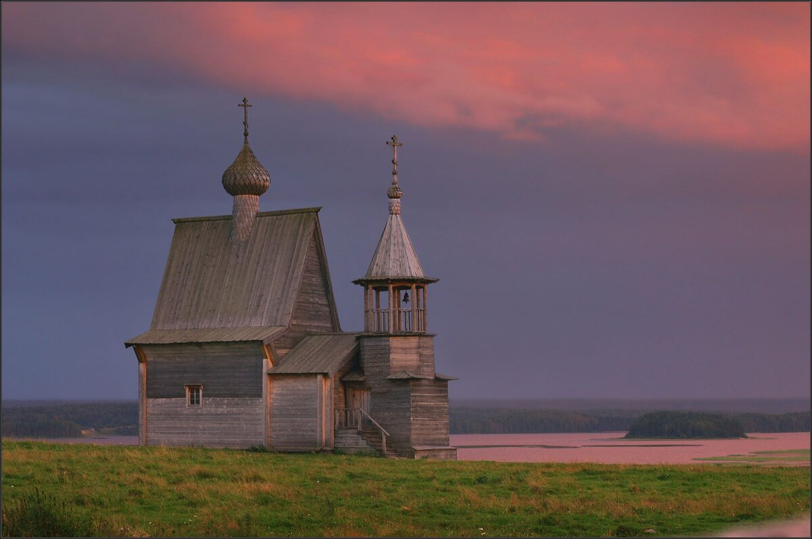
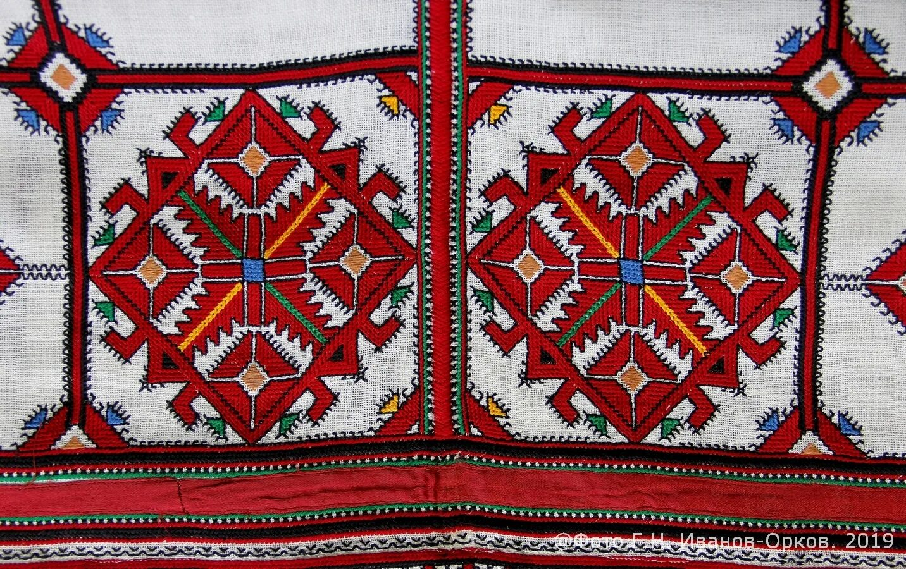

Дерево
На Севере дерево формирует и дом, и предмет быта, и орнаментальный ритм пространства.
Раздел 3
Орнамент, костюм, предметы быта и формы жилища показывают, как народная культура умеет соединять красоту, практичность и символический смысл. В этом разделе можно сравнить материалы, декоративные приемы и архитектурные решения разных регионов.

Коллекция форм
Предметы традиционной культуры создавались для жизни, праздника и обряда, но со временем превратились еще и в культурные символы целых регионов.
Материалы памяти

На Севере дерево формирует и дом, и предмет быта, и орнаментальный ритм пространства.

Вышивка и ткачество хранят цветовой код семьи, праздника и народного костюма.

Горная архитектура показывает, как материал помогает культуре говорить языком силы и устойчивости.

В Арктике и Сибири природный материал одновременно отвечает за выживание и художественную выразительность.
Четыре вывода
Вместе с вещью сохраняется знание материала, приемов и локального мастерства.
Дом, башня, чум или деревянная часовня всегда говорят о природной и исторической среде.
Узор оказывается визуальной формой памяти, которую легко передавать через поколение.
Именно ремесло учит видеть красоту в точности, материале и уважении к традиции.